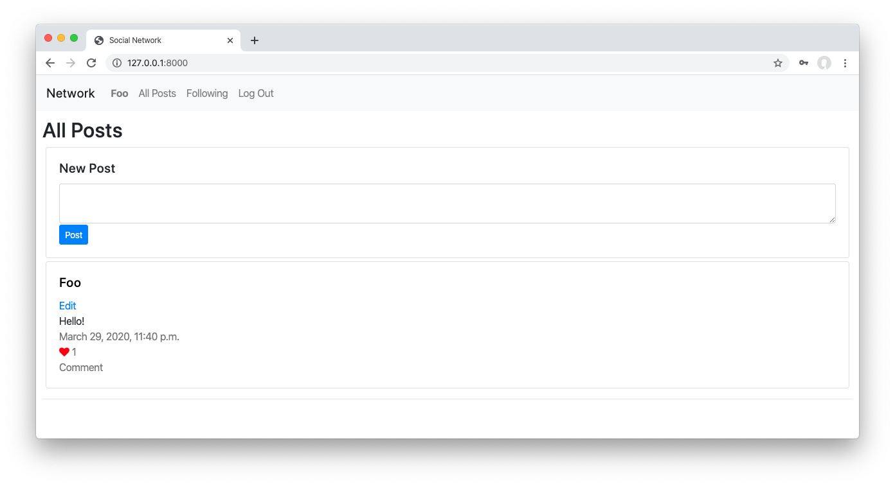

Network
CS50W does not feature a one-to-one correspondence between lectures and projects. If you are attempting this project without having at least watched Lecture 7, you’re trying this too soon!
Design a Threads-like social network website for making posts and following users.

Getting Started
- Download the distribution code from https://cdn.cs50.net/web/2020/spring/projects/4/network.zip and unzip it.
- In your terminal,
cdinto theproject4directory. - Run
python manage.py makemigrations networkto make migrations for thenetworkapp. - Run
python manage.py migrateto apply migrations to your database.
Understanding
In the distribution code is a Django project called project4 that contains a single app called network, structured similarly to Project 2’s auctions app.
First, open up network/urls.py, where the URL configuration for this app is defined. Notice that we’ve already written a few URLs for you, including a default index route, a /login route, a /logout route, and a /register route.
Take a look at network/views.py to see the views that are associated with each of these routes. The index view for now returns a mostly-empty index.html template. The login_view view renders a login form when a user tries to GET the page. When a user submits the form using the POST request method, the user is authenticated, logged in, and redirected to the index page. The logout_view view logs the user out and redirects them to the index page. Finally, the register route displays a registration form to the user, and creates a new user when the form is submitted. All of this is done for you in the distribution code, so you should be able to run the application now to create some users.
Run python manage.py runserver to start up the Django web server, and visit the website in your browser. Click “Register” and register for an account. You should see that you are now “Signed in as” your user account, and the links at the top of the page have changed. How did the HTML change? Take a look at network/templates/network/layout.html for the HTML layout of this application. Notice that several parts of the template are wrapped in a check for if user.is_authenticated, so that different content can be rendered depending on whether the user is signed in or not. You’re welcome to change this file if you’d like to add or modify anything in the layout!
Finally, take a look at network/models.py. This is where you will define any models for your web application, where each model represents some type of data you want to store in your database. We’ve started you with a User model that represents each user of the application. Because it inherits from AbstractUser, it will already have fields for a username, email, password, etc., but you’re welcome to add new fields to the User class if there is additional information about a user that you wish to represent. You will also need to add additional models to this file to represent details about posts, likes, and followers. Remember that each time you change anything in network/models.py, you’ll need to first run python manage.py makemigrations and then python manage.py migrate to migrate those changes to your database.
Specification
Using Python, JavaScript, HTML, and CSS, complete the implementation of a social network that allows users to make posts, follow other users, and “like” posts. You must fulfill the following requirements:
-
New Post: Users who are signed in should be able to write a new text-based post by filling in text into a text area and then clicking a button to submit the post.
- The screenshot at the top of this specification shows the “New Post” box at the top of the “All Posts” page. You may choose to do this as well, or you may make the “New Post” feature a separate page.
-
All Posts: The “All Posts” link in the navigation bar should take the user to a page where they can see all posts from all users, with the most recent posts first.
- Each post should include the username of the poster, the post content itself, the date and time at which the post was made, and the number of “likes” the post has (this will be 0 for all posts until you implement the ability to “like” a post later).
-
Profile Page: Clicking on a username should load that user’s profile page. This page should:
- Display the number of followers the user has, as well as the number of people that the user follows.
- Display all of the posts for that user, in reverse chronological order.
- For any other user who is signed in, this page should also display a “Follow” or “Unfollow” button that will let the current user toggle whether or not they are following this user’s posts. Note that this only applies to any “other” user: a user should not be able to follow themselves.
-
Following: The “Following” link in the navigation bar should take the user to a page where they see all posts made by users that the current user follows.
- This page should behave just as the “All Posts” page does, just with a more limited set of posts.
- This page should only be available to users who are signed in.
-
Pagination: On any page that displays posts, posts should only be displayed 10 on a page. If there are more than ten posts, a “Next” button should appear to take the user to the next page of posts (which should be older than the current page of posts). If not on the first page, a “Previous” button should appear to take the user to the previous page of posts as well.
- See the Hints section for some suggestions on how to implement this.
-
Edit Post: Users should be able to click an “Edit” button or link on any of their own posts to edit that post.
- When a user clicks “Edit” for one of their own posts, the content of their post should be replaced with a
textareawhere the user can edit the content of their post. - The user should then be able to “Save” the edited post. Using JavaScript, you should be able to achieve this without requiring a reload of the entire page.
- For security, ensure that your application is designed such that it is not possible for a user, via any route, to edit another user’s posts.
- When a user clicks “Edit” for one of their own posts, the content of their post should be replaced with a
-
“Like” and “Unlike”: Users should be able to click a button or link on any post to toggle whether or not they “like” that post.
- Using JavaScript, you should asynchronously let the server know to update the like count (as via a call to
fetch) and then update the post’s like count displayed on the page, without requiring a reload of the entire page.
- Using JavaScript, you should asynchronously let the server know to update the like count (as via a call to
Hints
- For examples of JavaScript
fetchcalls, you may find some of the routes in Project 3 useful to reference. - You’ll likely need to create one or more models in
network/models.pyand/or modify the existingUsermodel to store the necessary data for your web application. - Django’s Paginator class may be helpful for implementing pagination on the back-end (in your Python code).
- Bootstrap’s Pagination features may be helpful for displaying pages on the front-end (in your HTML).
How to Submit
- Visit this link, log in with your GitHub account, and click Authorize cs50. Then, check the box indicating that you’d like to grant course staff access to your submissions, and click Join course.
-
Install Git and, optionally, install
submit50.
When you submit your project, the contents of your web50/projects/2020/x/network branch should match the file structure of the unzipped distribution code as originally received. That is to say, your files should not be nested inside of any other directories of your own creation. Your branch should also not contain any code from any other projects, only this one. Failure to adhere to this file structure will likely result in your submission being rejected.
By way of example, for this project that means that if the grading staff visits https://github.com/me50/USERNAME/tree/web50/projects/2020/x/network (where USERNAME is your own GitHub username as provided in the form, below) we should see the two subdirectories (network, project4) and the manage.py file. If that’s not how your code is organized when you check, reorganize your repository needed to match this paradigm.
- If you’ve installed
submit50, executesubmit50 web50/projects/2020/x/networkOtherwise, using Git, push your work to
https://github.com/me50/USERNAME.git, whereUSERNAMEis your GitHub username, on a branch calledweb50/projects/2020/x/network. -
Record a screencast, not to exceed 5 minutes in length in which you demonstrate your web app’s functionality. Upload that video to YouTube (as unlisted or public, but not private). This video’s requirements are:
- It is not a YouTube “short”.
- The video begins with a slide or text overlay containing both your edX and GitHub usernames.
- It must show your web app live and in action. Do not use this video to walk us through any code.
- It demonstrates that all seven (7) items of the specification have been implemented.
- The video description has been timestamped at the (first) point where your video demonstrates each of the above-referenced implementations.
- The video has been uploaded less than one month from the time of your submission of the form for this project (the final step below).
- Submit this form.
You can then go to https://cs50.me/cs50w to view your current progress!
On 6 January 2026, the course’s Gradebook performed its annual “reset”. Your past progress is not automatically lost, however, so do not instinctively resubmit this assignment if you have already earned a passing grade on it. Please read cs50.harvard.edu/web/faqs/#i-completed-an-assignment-or-this-course-in-a-prior-year-why-does-my-gradebook-no-longer-show-my-prior-progress for more information.
If your course is incomplete at the time of the gradebook reset, not to worry. Simply continue where you left off, and your older scores will import once any newly-submitted work is graded in 2026!